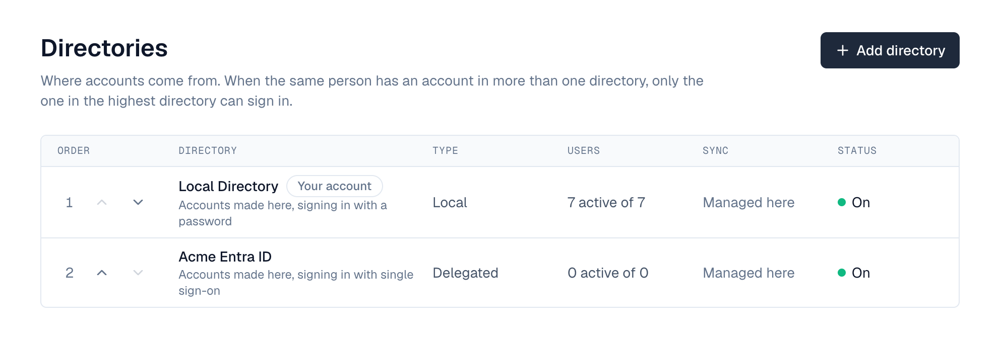
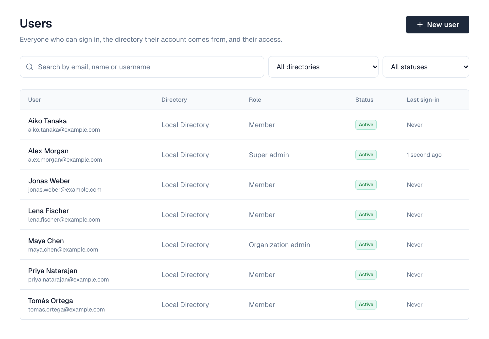
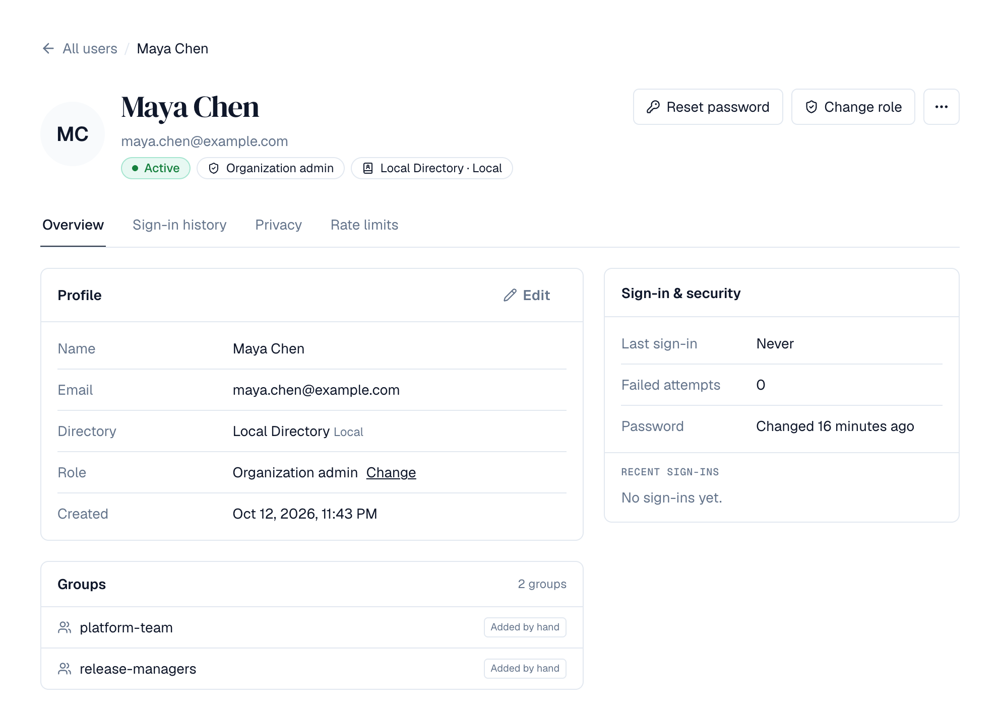
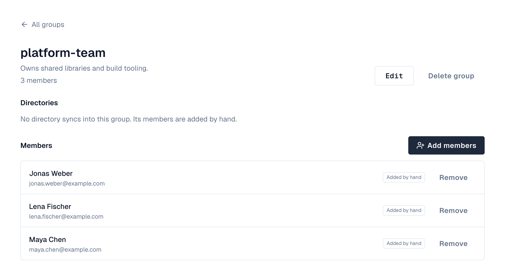

1. Overview
Every user account belongs to a directory: the place the account comes from and that decides how the person signs in. Every installation starts with one directory, Local, created by the setup wizard; the first administrator is in it.
| Directory | Accounts | Sign-in | License |
|---|---|---|---|
| Local | Created and edited in Depotex | Email and password | Standard or higher |
| Delegated | Created and edited in Depotex (or on first sign-in), without passwords | Single sign-on through your identity provider | Standard or higher |
| LDAP | Read from an LDAP server (OpenLDAP, 389 Directory Server, FreeIPA…) on a schedule; not editable here | Directory password (LDAP bind), or single sign-on | Pro or higher |
| Active Directory | Read from Microsoft Active Directory on a schedule; not editable here | Directory password (LDAP bind), or single sign-on | Pro or higher |
| SCIM | Pushed by your identity provider (Okta, Microsoft Entra ID, OneLogin, JumpCloud…) as people join, change and leave; not editable here | Single sign-on | Enterprise |
| Microsoft Entra ID | Read from Microsoft Entra ID (Azure AD) through Microsoft Graph on a schedule; not editable here | Single sign-on | Enterprise |
| Google Workspace | Read from Google Workspace through the Admin SDK on a schedule; not editable here | Single sign-on | Enterprise |
Which one? If your identity provider supports SCIM provisioning (Okta, Entra ID and most others do), a SCIM directory updates Depotex within seconds of a change. Pick Microsoft Entra ID or Google Workspace when you'd rather have Depotex read the directory on a schedule, or LDAP/Active Directory for on-premises directories.
2. Directory order
Directories are kept in order, highest first. When the same person has an account in more than one directory, matched by email or username regardless of upper and lower case, only the account in the highest directory is used. The others are *shadowed*: they can't sign in, don't use a license seat, and show a Shadowed badge on the Users screen.

- If the account in the highest directory is disabled or locked, the person can't sign in. Depotex does not try the next directory.
- A disabled directory is skipped entirely, so accounts in the next directory take over.
- Changing the order can switch which account (and so which role) a person signs in with. Their current sessions continue until they sign in again.
3. Managing directories
Settings → Directories lists every directory in order with its type, how many of its users are active, when a synced directory last synced, and its status: On, Off, or for a synced directory whose last sync didn't go through, Blocked or Failing with the reason underneath. Your account marks the directory your own account is in. Anyone with the directories:read permission can view it; changing it needs directories:write (super admins).
Select a directory's name to open its page: its status and on/off switch at the top, then its settings one row each (name, connection, sign-in, schedule) and, for a synced directory, its sync controls and History. Changes wait in a bar at the bottom of the page until you select Save (or Discard).
| Task | How |
|---|---|
| Change the order | Use the up and down arrows next to a directory in the list. The new order applies to the next sign-in. |
| Rename | On the directory's page, change Name and select Save. |
| Turn off | On the directory's page, switch it off and confirm. Users in the directory are signed out on their next request and can't sign in until you turn it on again. The directory that holds your own account can't be turned off by you. |
| Turn on | Switch it on; it applies at once. |
| See its accounts | For Local and Delegated directories, Open its accounts shows Settings → Users filtered to that directory. |
| Delete | Delete… at the bottom of the directory's page, for an empty directory other than Local. |
To keep your organization from being locked out, Depotex refuses to:
- disable the last enabled directory;
- disable the directory your own account is in;
- disable a directory if no active super admin could sign in afterwards.
4. Setting up the Local directory
There is nothing to configure: the setup wizard creates the Local directory and your first administrator in it. People in the Local directory sign in with their email address, which is their username. Email addresses are unique within a directory regardless of case: Ann@example.com and ann@example.com are the same account.
5. Managing users
Settings → Users lists everyone in your organization: profile picture, name, email, directory, role, status and last sign-in. Search by email, name or username, and filter by directory or status (Active, Disabled, Locked, Invited, Anonymized). Select a user to see their details, account status and sign-in history. Seeing users needs users:read and profiles:view (see Profile pictures and finding people).

| Badge | Meaning |
|---|---|
| Active | Can sign in |
| Disabled | Can't sign in. The details page says why: disabled by an administrator, disabled or removed in the user's directory, or over the license's user limit |
| Locked | Too many wrong passwords; locked until the time shown, or until an administrator unlocks it |
| Shadowed | The same person has an account in a higher directory; this one can't sign in |
| Directory off | The user's directory is disabled |
6. Creating a user
- Open Settings → Users — Select New user.
- Enter the details — Email (the person signs in with it), name and a password. Passwords must be at least 12 characters and can't contain the email address; long passphrases are best.
- Choose a role — Member, Organization admin or Super admin. You can only grant a role up to your own.
- Decide about the password — Leave Ask for a new password at first sign-in on when you'll share a temporary password. The person then has to choose their own before they can do anything else.
- Create — Share the email and password with the person through a secure channel.
New users go into the Local directory. Creating a user needs the users:write permission and a free license seat; seats count active users who aren't shadowed.
7. A user's page
Select a user in Settings → Users to open their page. The header shows their name, email, username, status, role and directory. Below it, a banner explains any state that keeps them from signing in normally (locked, disabled, invitation not accepted, shadowed, must choose a new password), with the fix beside it: Unlock, Enable or Resend invitation.

- Overview: their profile and groups, and a Sign-in & security card with their last sign-in, failed attempts, password state and latest sign-ins.
- Sign-in history: every sign-in, newest first, with the address and browser. Filter it to Signed in or Refused; refused ones say why.
- Privacy: download their personal data or anonymize them (see below). Shown to people with users:export or users:anonymize.
8. Actions on a user
Reset password and Change role are buttons in the page header; Sign out everywhere, Disable user and Enable user are in the ⋯ menu next to them.
| Action | What it does | Permission |
|---|---|---|
| Edit | Change the email or name. Only for Local users (and later Delegated ones): details of users from an external directory are changed there | users:write |
| Disable | Signs the user out on every device and stops them signing in. You can't disable yourself or the last super admin who can sign in | users:delete |
| Enable | Lets a disabled user sign in again (needs a free license seat). Users disabled by their external directory are enabled there | users:delete |
| Unlock | Clears a lockout after failed sign-ins right away | users:write |
| Reset password | Sets a new password for a Local user and signs them out everywhere. Optionally asks them for a new one at next sign-in | users:write |
| Change role | Member, Organization admin or Super admin. Not your own role, and not above your own | roles:write |
| Sign out everywhere | Ends every session on every device; the user can sign in again | users:write |
Organization admins can't act on super admins. Every action is recorded in the audit log.
9. Profile pictures and finding people
Wherever Depotex lists people, it shows each person's profile picture, or their initials when they haven't chosen one: Settings → Users and a user's page, a group's members and Add members, a space's or repository's members and the search for people to add, and the audit log. People choose their picture under Profile (a built-in picture or an upload of up to 2 MB).
Looking people up needs the profiles:view permission. Every signed-in role holds it by default; super admins hold every permission. It covers:
- Searching people: the Settings → Users list and the people pickers of groups, spaces and repositories.
- Opening a user's page.
- Seeing who is in a group, a space or a repository. Every space role, Viewer included, also gives it for that space, so a space's members always see each other and who has access to its repositories. Someone who can only read a space (an internal or public one) without a role there sees that it has members, not who they are.
- Seeing other people's profile pictures, only those of people in your organization (super admins: every organization). Your own picture never needs it.
Someone without profiles:view sees initials instead of other people's pictures, no search box for adding people, and a note instead of member lists they may not see. An API token that lists or opens users, or lists members, needs profiles:view among its permissions, even where a space role gives it to its owner; tokens created before it existed must be re-created with it.
10. Groups
Settings → Groups lists your organization's groups with their member counts and where they come from. A group's page shows its members, how each one got there (Added by hand, or From a directory) and the directories that sync into it. Viewing needs groups:read, and seeing its members also profiles:view; creating, editing, deleting and managing members needs groups:write.

11. Creating a group
- Open Settings → Groups — Select New group.
- Name it — Enter a name and, optionally, a description. Names are unique in your organization regardless of upper and lower case: Engineering and engineering are the same group.
- Add members — On the group's page select Add members, search for people from any directory, tick them and select Add.
How groups and directories fit together:
- One group per name. When a directory that syncs or provisions groups (LDAP, Active Directory, SCIM, Entra ID, Google Workspace) has a group whose name matches an existing group, its members are added to that group instead of creating a second one. Every such merge is recorded in the audit log.
- Manual members are never touched by sync. People you add by hand stay until you remove them, even if they're also in the group through a directory.
- Directory members are managed in the directory. When someone leaves the group in the directory, or leaves the directory, the next sync removes that membership. You can't remove them here; the Remove button appears only for members added by hand.
- Groups are never deleted automatically. If a group disappears from a directory, the members that directory added are removed and the group is marked as removed from that directory; the group and its manual members stay.
- A group that a directory still syncs into can't be deleted here. Renaming it is fine: the directory keeps finding it by its ID.
Groups don't grant permissions yet: access still comes from each user's role. Group-based roles will build on these groups.
12. Privacy requests (GDPR)
On a user's page, the Privacy tab answers the two most common data-protection requests. Both need a permission that super admins have: users:export and users:anonymize.
13. Access: download a person's data
Download personal data saves a JSON file with everything Depotex stores about the person: their profile and directory, role, groups, preferences, avatar choice, sessions, sign-in history, API tokens (never the secrets), alert preferences and the actions they performed (latest 5,000 audit entries), plus whatever installed product modules keep. People can download their own data under Profile → Security → Download my data. Every download is recorded in the audit log.
14. Erasure: anonymize a person
- Disable the user — Only disabled users can be anonymized, so nobody is erased by accident while still working. For a user from LDAP or Active Directory, disable them in Depotex (they may still be in the directory).
- Download their data if you need it — Anonymizing can't be undone.
- Open the user's page — On the Privacy tab, select Anonymize….
- Confirm — Type the person's email address and your own password, then select Anonymize permanently.
What is removed: name, email, username, directory ID, password, avatar image, theme and language, sign-in and failed-attempt details, sessions (they're signed out everywhere), sign-in history, API tokens and keys, group memberships, roles and alert preferences. In the audit log and in stored events, their email address, network addresses and browser are removed.
What stays: the account itself, renamed Deleted user with an unusable address, so the audit log and records they created still make sense ("Deleted user did X"). It can never sign in or be enabled again, and it doesn't use a license seat.
Directories: if the person still exists in an LDAP or Active Directory directory, sync doesn't bring them back; the run lists them as skipped (*anonymized*). Depotex keeps only a keyed hash of their directory ID for that, not the ID itself.
Anonymizing erases the data inside Depotex. Database backups, exported files and logs you keep elsewhere still contain it until they expire: include them in your erasure process.
Plugins and automation can react to the user.anonymize event to erase what they hold about the user ID. Policies can restrict who anonymizes whom.
15. Forgotten passwords
When email is set up, the sign-in page shows Forgot password?. Local users enter their email address and get a link to choose a new password. The link works once and expires after 30 minutes (AUTH_PASSWORD_RESET_TTL); choosing a new password signs them out everywhere and unlocks a locked account.
- The page always gives the same answer, whether or not the address belongs to an account, so it can't be used to find out who has one.
- Only active Local accounts get a link. Disabled users, invited users, and users from Delegated, LDAP or Active Directory directories (who reset their password in their own directory) get nothing.
- At most 3 links per account per hour and 10 per network address per 15 minutes are sent; further requests are silently ignored.
- A new link makes older ones stop working.
16. Inviting users
With email set up, New user offers Email an invitation instead of setting a password for the Local directory. The person gets a link to choose their own password; until then they show as Invited and can't sign in. The link expires after 7 days (AUTH_INVITATION_TTL); Resend invitation on their page sends a new one and stops the old link. Accepting needs a free license seat.
17. Your password
Open the profile menu, choose Edit Profile → Security, enter your current password and the new one twice, then Change password. Your other devices are signed out; this one stays signed in. Users from directories that sign in another way (for example single sign-on) don't have a password here.
If an administrator set a temporary password for you, you'll see Set a new password right after signing in. Choose your own to continue.
18. Setting up a Delegated directory
A Delegated directory holds people whose passwords live somewhere else: they sign in through your identity provider with single sign-on. You manage their accounts here: name, email, role, groups, enabled or disabled. Typical uses: contractors or partners from another company's identity provider, or staff who should only ever use single sign-on. Accounts can also be created automatically the first time someone signs in (see Single sign-on → Accounts).
After adding the directory, add an identity provider for it under Settings → Single sign-on (Enterprise). Without one, its people can't sign in.
Before you start: you need the directories:write permission (super admins) to add the directory, and users:write to add people. Each active, non-shadowed Delegated user uses a license seat.
- Open Settings → Directories — Select Add directory: a page lists the types, grouped by where the accounts come from.
- Choose the type — Pick Delegated under Made in Depotex.
- Name it — Use a name people will recognize in the Users list and filters, for example Partners or Contoso SSO. You can rename it later.
- Add it — Select Add directory in the bar at the bottom. The new directory is added last in the order, is on, and its page opens.
- Decide its place in the order — If the same people also have Local accounts, the higher directory wins at sign-in. Leave Delegated below Local while people still sign in with passwords; move it above Local (up arrow) when you want those people to use single sign-on instead. The Users screen marks the losing accounts as Shadowed.
- Add people — Open Settings → Users, select New user, choose the Delegated directory under Directory, and enter email, name and role. There is no password field. The email must match the email your identity provider will send for that person.
- Put them in groups — Add them to groups from the group's page or check their groups on their user page, as for any other user.
Fields
| Field | What to enter |
|---|---|
| Type | Delegated |
| Name | Up to 200 characters; shown in the Users list, filters and user pages |
What you can do with Delegated users: edit their email and name, change their role, disable and enable them, sign them out everywhere, add them to groups, and see their sign-in history. Reset password isn't offered: they have no password here.
Removing a Delegated directory: only a directory with no users in it can be deleted (for example one you added by mistake), and the Local directory can never be deleted. Users can't be deleted, so for a directory you no longer need, Disable it: its users can't sign in and nothing is lost.
Troubleshooting
| Symptom | Cause and fix |
|---|---|
| A Delegated user can't sign in with a password | Expected: Delegated users have no password here. They use the Sign in with … button of the directory's identity provider. |
| The user shows Shadowed | An account with the same email or username exists in a higher directory, and that one is used at sign-in. Move the directories into the order you want, or remove the other account. |
| "A user with that email already exists in this directory" | Emails are unique within a directory regardless of case. Find the existing account with the search box. |
| "Your license allows N active users" | Every active, non-shadowed user uses a seat. Disable someone or upgrade the license. |
| Delete says the directory isn't empty | Directories with users can't be deleted. Disable the directory instead. |
19. How directory sync works
LDAP, Active Directory, Microsoft Entra ID and Google Workspace directories are read, never written: Depotex copies users and groups from the directory on a schedule. Each sync reads every user and group the filters match (a full sync) and then:
| In the directory | In Depotex |
|---|---|
| New user | An account is created in this directory (disabled if the license has no free seat) |
| User's email, name or username changed | Updated here. Details of directory users can't be edited in Depotex |
| User disabled (Active Directory) | Disabled here and signed out everywhere |
| User enabled again, or back in the directory | Enabled again here, unless an administrator disabled them in Depotex |
| User deleted or no longer matches the filter | Disabled here (Removed from the directory) and signed out; never deleted. Their memberships from this directory are removed |
| User re-created with a new ID but the same email | Linked to the existing account |
| Group | Linked to the Depotex group with the same name (any case), or created. Only this directory's members of that group are changed; members added by hand or by other directories stay |
| Group deleted | The members this directory added are removed; the group itself stays |
People are matched between syncs by the directory's immutable ID (entryUUID, or objectGUID in Active Directory), so renaming or moving someone in the directory keeps their Depotex account, roles and history.
Safety checks. A sync changes nothing and is marked Blocked when:
- the directory returns no users while some are active here (typically a wrong base DN or filter), or
- it would disable more than the deprovisioning limit (10% of active users by default, once there are at least 5). An expired service account or a wrong filter otherwise looks like everyone leaving.
Check the settings, then use Run anyway… in the banner at the top of the directory's page if the change is real (for example a department really left). That lets one sync go past the limit.
Skipped items. Users without an ID or email address, with an invalid email, or with the same email or username as another user in the same directory are skipped and listed under the run; the rest of the sync still happens (Succeeded, some items skipped).
Signing in. With Directory password, Depotex checks the password against the directory at every sign-in (LDAP bind), so password changes and lockouts in the directory apply immediately. Depotex's own lockout and per-address limits also apply. If the directory can't be reached, sign-in fails for that directory's users (Local users are unaffected). With Single sign-on only, directory users don't sign in with a password here.
Schedule. Each directory syncs at its own interval (every 60 minutes by default). A new directory doesn't sync until you start it: run a Dry run first, then Sync now. After that it runs on schedule. The directory-sync scheduled job checks every minute which directories are due; in a cluster each sync runs on exactly one server.
20. Setting up an LDAP directory
Use this for OpenLDAP, 389 Directory Server, Red Hat Directory Server, FreeIPA, Oracle Unified Directory and other LDAPv3 servers. For Microsoft Active Directory use the next section.
Before you start
- A Pro license or higher, and the directories:write permission (super admins).
- Network access from every Depotex server to the LDAP server: port 636 for LDAPS, or 389 for StartTLS.
- A service account that can read users and groups (read-only is enough), and its password.
- The base DN under which your users live (for example ou=people,dc=example,dc=com) and, to sync groups, the base DN of your groups.
- If the server's certificate comes from a private certificate authority: that CA's certificate in PEM format.
- Open Settings → Directories — Select Add directory and choose LDAP under Directory servers.
- Name the directory — For example Corporate LDAP. It appears in the Users list and filters.
- Connection — Enter the Server URL, for example ldaps://ldap.example.com:636. Under Security choose TLS for ldaps://, or StartTLS for ldap://…:389. Paste the CA certificate if your certificate authority is private. Use None only in an isolated test lab.
- Service account — Enter the Bind DN (for example cn=depotex,ou=services,dc=example,dc=com) and its Bind password. The password is stored encrypted and never shown again.
- Users — Enter the User base DN. The default User filter (objectClass=inetOrgPerson) fits most servers; narrow it to sync only some people, for example (&(objectClass=inetOrgPerson)(memberOf=cn=depotex-users,ou=groups,dc=example,dc=com)).
- Groups (optional) — Enter the Group base DN to sync groups; leave it empty to sync users only. The default filter covers groupOfNames and groupOfUniqueNames. For groupOfUniqueNames, set Group member to uniqueMember under Attribute mapping.
- Attribute mapping (optional) — Defaults: ID entryUUID, username uid, email mail, display name cn, group name cn, member member. Change them only if your schema differs. Every user needs an email address.
- Sign-in — Choose With their directory password (most common) or Single sign-on only.
- Sync — Set how often to sync and the deprovisioning limit. Keep the limit low (10% default) unless many people leave at once.
- Test and add — Select Test connection: it should report the users and groups it can see. Then select Add directory in the bar at the bottom.
- Dry run — On the directory's page select Dry run, then open the run on the History tab: it shows users to create, change and disable, groups to create or merge, and anything it skipped. Adjust filters if needed.
- First sync — Select Sync now. Afterwards the directory syncs on its schedule.
- Choose the order — On Settings → Directories, move the directory above or below Local. If the same person has a Local account and a directory account, the higher one is used at sign-in.
Fields
| Field | What to enter | Example |
|---|---|---|
| Server URL | ldaps://host:636 or ldap://host:389 | ldaps://ldap.example.com:636 |
| Security | TLS, StartTLS or None (test labs only) | TLS |
| Don't check the server certificate | Leave off. Turn on only in a test lab | off |
| CA certificate | PEM of your private CA | -----BEGIN CERTIFICATE-----… |
| Bind DN / password | Read-only service account | cn=depotex,ou=services,dc=example,dc=com |
| User base DN / filter | Where users are and which to sync | ou=people,dc=example,dc=com / (objectClass=inetOrgPerson) |
| Group base DN / filter | Where groups are; empty = no groups | ou=groups,dc=example,dc=com |
| Unique ID | Immutable ID attribute | entryUUID (OpenLDAP), nsUniqueId (389 DS), ipaUniqueID (FreeIPA) |
| Username / Email / Display name | Attributes | uid / mail / cn |
| Group name / member / description | Attributes | cn / member / description |
| Sync every | Minutes, 5 to 10080 | 60 |
| Deprovisioning limit | Percent of active users, 1 to 100 | 10 |
21. Setting up an Active Directory directory
Before you start
- A Pro license or higher, and the directories:write permission (super admins).
- Network access from every Depotex server to a domain controller: port 636 (LDAPS) or 389 with StartTLS. The domain controller needs a certificate for LDAPS; your AD Certificate Services CA certificate goes in CA certificate if Depotex doesn't already trust it.
- A domain service account (a normal user in *Domain Users* is enough to read users and groups). Set its password not to expire, or plan to update it here: an expired password stops syncing and, with directory-password sign-in, stops sign-in for directory users.
- The distinguished name of the OU with your users (for example OU=Staff,DC=corp,DC=example,DC=com) and, to sync groups, of the OU with your groups.
- Open Settings → Directories — Select Add directory and choose Active Directory under Directory servers.
- Name the directory — For example Corp AD.
- Connection — Enter the Server URL of a domain controller, for example ldaps://dc01.corp.example.com:636, or the domain name if your DNS load-balances domain controllers. Choose TLS (recommended) or StartTLS. Paste your AD CA certificate if needed.
- Service account — Enter its full distinguished name as Bind DN, for example CN=svc-depotex,OU=Service Accounts,DC=corp,DC=example,DC=com, and its password. (A user@corp.example.com UPN also works as bind DN on Active Directory.)
- Users — Enter the User base DN. The default filter (&(objectCategory=person)(objectClass=user)) reads all people accounts under it. To sync only members of an AD group, use (&(objectCategory=person)(objectClass=user)(memberOf:1.2.840.113556.1.4.1941:=CN=Depotex Users,OU=Groups,DC=corp,DC=example,DC=com)).
- Groups (optional) — Enter the Group base DN. Include members of nested groups is on by default: members of groups inside a group count as its members.
- Attribute mapping (optional) — Defaults: ID objectGUID, username sAMAccountName, email mail, display name displayName. Users without mail are skipped; if your users have no mail, set Email to userPrincipalName.
- Sign-in, sync, test, dry run, first sync and order — As for LDAP above: choose the sign-in mode, test the connection, add the directory, run a dry run, then Sync now, and place the directory in the order.
Accounts disabled in Active Directory (the *account is disabled* flag) are disabled in Depotex at the next sync, and can't sign in with their password even before that.
22. Setting up a Microsoft Entra ID directory
Depotex reads users and, optionally, groups from Microsoft Entra ID (Azure AD) through Microsoft Graph, on the schedule you choose, with the same dry run, safety checks and group merging as other synced directories. People sign in with single sign-on; set that up too.
Before you start: an Enterprise license, the directories:write permission, and a Microsoft Entra administrator who can grant admin consent.
- Register an app in Entra — In the Microsoft Entra admin center, Identity → Applications → App registrations → New registration, name it Depotex directory sync, single tenant. No redirect URI is needed. (You can reuse the single sign-on app registration.)
- Give it read access — Open API permissions → Add a permission → Microsoft Graph → Application permissions and add User.Read.All and GroupMember.Read.All. Select Grant admin consent for <your organization>; the status must show a green check.
- Create a secret — Certificates & secrets → New client secret. Copy the Value right away, and note when it expires: sync stops until you enter a new one.
- Copy the IDs — From Overview: the Directory (tenant) ID and Application (client) ID.
- Add the directory in Depotex — Settings → Directories → Add directory → Microsoft Entra ID. Enter a name, the tenant ID, client ID and client secret.
- Choose users and groups — Optionally narrow users with a User filter. For groups, enter a Group filter (for example only groups whose names start with Depotex) or tick Sync every group in the tenant; with neither, no groups are synced.
- Test, create, dry run — Select Test connection (it reports how many users and groups it can see), then Add directory, then Dry run on the directory page and check the preview before Sync now.
| Field | What to enter |
|---|---|
| Directory (tenant) ID | A GUID, or a verified domain such as contoso.onmicrosoft.com |
| Application (client) ID | From the app registration's Overview |
| Client secret value | Stored encrypted, never shown again; leave empty later to keep it |
| User filter | Optional Microsoft Graph $filter on users, for example endswith(mail,'@contoso.com') or accountEnabled eq true. Empty reads every user |
| Group filter | Microsoft Graph $filter on groups, for example startswith(displayName,'Depotex') |
| Sync every group in the tenant | Reads all groups instead of filtering |
| Sync interval, Deprovisioning limit | As for LDAP (see How directory sync works) |
How Entra data maps: the email is the user's mail, or their user principal name when mail is empty (guest accounts without mail are skipped, as they have no usable email); the username is the user principal name; users with Account enabled off are disabled in Depotex. Group members include members of nested groups.
| Message | Cause and fix |
|---|---|
| The service account was refused | Wrong tenant ID, client ID or secret, or the secret expired. Create a new secret and enter it |
| The server refused the search | The app lacks User.Read.All / GroupMember.Read.All application permissions or admin consent, or a filter is invalid |
| Items skipped: No email address | Those users have neither mail nor a usable user principal name |
23. Setting up a Google Workspace directory
Depotex reads users and, optionally, groups from Google Workspace through the Admin SDK Directory API, using a service account with domain-wide delegation. People sign in with single sign-on.
Before you start: an Enterprise license, the directories:write permission, a Google Cloud project, and a Google Workspace super administrator.
- Enable the API — In the Google Cloud console, open APIs & Services → Library and enable the Admin SDK API.
- Create a service account — IAM & Admin → Service accounts → Create service account, name depotex-directory-sync. It needs no project roles.
- Create a key — Open the service account, Keys → Add key → Create new key → JSON. A file downloads; keep it safe. Copy the service account's Unique ID (client ID) from its details.
- Allow domain-wide delegation — In the Google Admin console, Security → Access and data control → API controls → Manage Domain Wide Delegation → Add new. Client ID: the service account's unique ID. OAuth scopes (comma-separated): https://www.googleapis.com/auth/admin.directory.user.readonly,https://www.googleapis.com/auth/admin.directory.group.readonly,https://www.googleapis.com/auth/admin.directory.group.member.readonly.
- Add the directory in Depotex — Settings → Directories → Add directory → Google Workspace. Enter a name, paste the whole JSON key file, and enter an administrator's email address for the service account to act as.
- Choose users and groups — Optionally narrow users with a User query; tick or untick Sync groups and their members.
- Test, create, dry run — Test connection, Add directory, then Dry run and Sync now.
| Field | What to enter |
|---|---|
| JSON key | The whole key file. Stored encrypted, never shown again; leave empty later to keep it |
| Administrator to act as | A Google Workspace administrator's email; the service account reads the directory with their access. If that person leaves, enter another administrator |
| User query | Optional Directory API query, for example orgUnitPath='/Engineering' or isSuspended=false. Empty reads every user |
| Customer ID | Empty (your own account, my_customer) unless Google support tells you otherwise |
| Sync groups and their members | On by default; members of nested groups are included |
How Google data maps: email and username are the primary email; suspended or archived users are disabled in Depotex.
| Message | Cause and fix |
|---|---|
| The JSON key isn't a service account key | Paste the whole downloaded key file, not the service account email or an OAuth client file |
| The service account was refused | Domain-wide delegation isn't set up for that client ID and those exact scopes, the administrator email is wrong, or the key was deleted |
| The server refused the search | The administrator to act as isn't an administrator, or the Admin SDK API isn't enabled in the project |
24. Setting up a SCIM directory
With SCIM, your identity provider pushes changes to Depotex as they happen: new people get an account, changes to name and email are copied, and people who are unassigned or deactivated are disabled within seconds. Groups pushed by the identity provider merge with Depotex groups of the same name. People sign in with single sign-on.
Before you start: an Enterprise license, the directories:write permission, the Depotex address set under Settings → General, and Depotex reachable over HTTPS from your identity provider (for cloud providers like Okta and Entra ID, from the internet).
- Add the directory — Settings → Directories → Add directory → SCIM, name it (for example Okta) and select Add directory.
- Copy the address and token — The directory's page shows the SCIM base URL (https://<your Depotex address>/api/scim/v2/<id>) and a Token. Copy both now: the token is shown only once. If you lose it, select Rotate token on the directory's page (the old one stops working at once).
- Set up provisioning at your identity provider — See Okta or Microsoft Entra ID below; other providers ask for the same two values (base URL and bearer token).
- Set up single sign-on — Add an identity provider for this directory under Settings → Single sign-on so people can sign in.
Okta
- Turn on SCIM — In the Okta Admin Console, open your Depotex app (the SAML or OIDC app integration from single sign-on). On General, under App Settings, set Provisioning to SCIM and save.
- Connect — On the new Provisioning → Integration tab: SCIM connector base URL = Depotex's SCIM base URL; Unique identifier field for users = userName; tick Push New Users, Push Profile Updates and Push Groups; Authentication Mode = HTTP Header, and paste the token as the bearer token. Test Connector Configuration, then save.
- Choose actions — On Provisioning → To App, enable Create Users, Update User Attributes and Deactivate Users.
- Assign people — Assign users or groups on Assignments; they are created in Depotex. To send groups, add them on Push Groups.
Microsoft Entra ID
- Open provisioning — In the Microsoft Entra admin center, Enterprise applications → your Depotex app (or New application → Create your own application → Non-gallery) → Provisioning → Get started, mode Automatic.
- Connect — Tenant URL = Depotex's SCIM base URL; Secret Token = the token. Test Connection, then Save.
- Check mappings — Under Mappings → Provision Microsoft Entra ID Users, userPrincipalName → userName, mail → emails[type eq "work"].value, Switch([IsSoftDeleted]…) → active are the defaults Depotex expects. Keep Provision Microsoft Entra ID Groups on to send groups.
- Assign and start — Assign users and groups under Users and groups, then set Provisioning Status to On. Entra provisions every 40 minutes; use Provision on demand to test one person.
What SCIM changes in Depotex
| At the identity provider | In Depotex |
|---|---|
| Person assigned | Account created in the SCIM directory (disabled if the license has no free seat) |
| Name, email or username changed | Copied to the account |
| Person deactivated (active = false) | Account disabled and signed out everywhere |
| Person reactivated | Account enabled again, unless an administrator disabled it in Depotex |
| Person unassigned or deleted | Account disabled (removed from the directory) and removed from the groups SCIM gave it; never deleted. If assigned again later, the same account comes back |
| Group pushed | Merged into the Depotex group with the same name, or a new group |
| Group members changed | Only memberships this directory added change; people added by hand or by other directories stay |
| Group removed | No longer linked; the Depotex group stays with its other members |
| Problem | Cause and fix |
|---|---|
| The identity provider reports 401 | Wrong or rotated token. Rotate the token in Depotex and enter the new one |
| 403 | The SCIM directory is disabled in Depotex, or the license isn't Enterprise |
| 409 uniqueness | Another account in this directory already has that userName or email |
| The base URL starts with /api | The Depotex address isn't set. Set it under Settings → General |
25. Troubleshooting directory sync
| Message | Cause and fix |
|---|---|
| Couldn't reach the server | Wrong host or port, a firewall, or DNS. Check from each Depotex server that the port is open (nc -vz host 636). |
| The secure connection failed | The certificate isn't trusted or doesn't match the host name. Use the host name on the certificate and paste your CA certificate. |
| The service account was refused | Wrong bind DN or password, or the account is locked, disabled or its password expired. |
| A base DN doesn't exist on the server | Typo in the user or group base DN. Copy it from your directory tool. |
| The server refused the search | Invalid filter, or the service account can't read that part of the directory. |
| Blocked: returned no users | The filter or base DN matches nobody, or the service account can't see the users. Nothing was changed. |
| Blocked: more users than the deprovisioning limit | Check whether those people really left. If yes, Run anyway; if not, fix the filter or base DN. |
| Items skipped: No email address | Those users have no value in the email attribute. Fill it in the directory or map another attribute. |
| Items skipped: Another group of this directory already uses this name | Two directory groups have the same name (for example in different OUs). Only the first one is synced; rename one in the directory. |
| Directory users can't sign in | Check the sign-in mode is With their directory password, the user is Active (not Shadowed or Disabled) on the Users screen, and the directory is reachable from the server. |
26. Signing in
Enter your email address (or, for directories that have usernames, your username) and your password. Upper and lower case in the email or username don't matter.
For security, a refused sign-in always says the email or password is wrong. It doesn't tell you whether the account exists, is disabled, or belongs to a directory that signs in another way.
27. Sessions and timeouts
How long people stay signed in is set under Settings → Security → Sessions (super admins: the settings:write permission). It applies to every server of a cluster within about 10 seconds. The Security page has two sections, Sessions and Require single sign-on, and one Save at the bottom that saves whatever you changed; people who may change only one of them see only that section. Available on every license tier.
| Setting | What it does | Default |
|---|---|---|
| Sign out after inactivity | Ends a session when the person hasn't typed, clicked, touched or scrolled for this long (15 minutes to 24 hours, or Never). Pages that refresh on their own don't count. Two minutes before, Depotex asks "Still there?" with Stay signed in. Activity in any tab counts for all tabs | Never |
| Maximum session length | Ends every session this many hours after sign-in, however active the person is (1 to 720). Also applies to single sign-on sessions. A warning shows two minutes before | 24 hours |
| Offer "Remember me" | Shows the Remember me box on the sign-in page. Untick it to make everyone sign in again after the maximum session length | On |
| Remembered sessions last | Maximum length for sessions with Remember me ticked (1 to 90 days). The inactivity limit still applies | 7 days |
| Sessions per person | How many browsers or devices one person can be signed in on; signing in once more ends their oldest session (1 to 100) | 5 |
Tighter settings apply at once: a shorter inactivity limit or maximum length signs out existing sessions that are past it on their next request. Looser settings apply to new sign-ins. After an automatic sign-out the sign-in page says why (inactivity, or the time limit).
API tokens aren't sessions: these settings don't affect them. Until you save the page, the defaults come from the AUTH_SESSION_LIFETIME, AUTH_REMEMBER_SESSION_LIFETIME and AUTH_MAX_SESSIONS environment variables.
28. CAPTCHA
Depotex can ask people to prove they're human where automated attacks happen. Under Settings → Security → CAPTCHA (settings:write, every license tier), switch each on separately and save with the page's Save:
| Switch | When it asks |
|---|---|
| Sign-in after failed attempts | Once an email address or a network address has the chosen number of failed sign-ins (default 3) within 30 minutes; also for addresses that have no account, so it never reveals which accounts exist. A successful sign-in clears the count for that email address |
| Creating and rotating API tokens | In the browser, on Create token and Rotate. Programs that create tokens with an existing API token aren't asked |
| Requesting a password reset | On the Forgot password? page, before any email is sent |
Providers
| Provider | Setup | Notes |
|---|---|---|
| Built in (default) | Nothing to set up. Choose the puzzle size (how long a browser works on it) | The browser solves a small computing puzzle automatically; nothing to click and nothing sent to a third party, so it works without internet access. Needs https (or localhost) |
| Cloudflare Turnstile | In the Cloudflare dashboard, Turnstile → Add widget with your Depotex domain; copy the site key and secret key | Browsers load the widget from Cloudflare |
| hCaptcha | In the hCaptcha dashboard, add a site with your domain; copy the site key and the account secret | Browsers load the widget from hCaptcha |
| Google reCAPTCHA v2 | In the reCAPTCHA admin console, register a v2 “I’m not a robot” site for your domain; copy the site key and secret key | Browsers load the widget from Google |
The secret key is stored encrypted and never shown again; leave it empty later to keep it. If the provider can't be reached, or rejects the secret key, the request is refused rather than let through; check Settings → Advanced → System check and the server log. Browsers must be able to reach the provider (the built-in one needs nothing).
Turning on the sign-in CAPTCHA with a third-party provider makes sign-in depend on that provider after failed attempts. The built-in provider has no such dependency.
29. Anonymous access
Settings → Security → Anonymous access (settings:write, every license tier) lets people who aren't signed in read and download from public spaces. It is off by default, and space owners can only make a space public while it's on. Turning it on asks you to confirm. Private and internal spaces always need a sign-in. See Spaces.
With anonymous access on, anyone who can reach the server can download everything in public spaces, and their downloads aren't tied to a person in the audit log. Keep secrets and internal builds in private or internal spaces.
Turning it off leaves public spaces public, but only signed-in people can read them until you turn it back on. The change applies on every server at once and raises the security.anonymous_access.update event.
30. Failed attempts and lockout
Depotex protects accounts against password guessing in two ways:
| Protection | What happens | Default |
|---|---|---|
| Account lockout | After too many wrong passwords within a time window, the account is locked for a while, even with the right password. The sign-in page says how many minutes are left. | 5 failures within 15 minutes lock the account for 15 minutes |
| Per-address limit | Too many failed sign-ins from one network address blocks further attempts from that address for a while, whichever accounts they target. | 20 failures within 15 minutes |
- A successful sign-in resets the account's failure count.
- Failures are counted across every server of a cluster, so spreading attempts over several nodes doesn't help an attacker.
- A correct password on a disabled account is refused but doesn't count towards lockout.
- API and OAuth tokens that were never issued count as failed attempts for the address that sent them.
- If Redis is unavailable in a cluster, sign-in keeps working and each server counts failed attempts from an address on its own until Redis is back.
- Administrators can change the per-address limit in Settings → Security → Rate limits (see Rate limits).
Anyone who knows an email address can lock that account by entering wrong passwords, but only for the lockout duration, and only a few accounts per network address because of the per-address limit. To unlock an account right away, an administrator selects Unlock on the user's page.
31. Login history
Every sign-in to an existing account, successful or refused, is recorded with the time, network address, browser and reason (wrong password, locked, disabled). Attempts with an email or username that matches no account aren't stored. The history is kept for 90 days and removed by the auth-session-cleanup scheduled job.
32. Configuration
Set these environment variables on every server (the same values on every node of a cluster):
| Variable | Default | What it does |
|---|---|---|
| AUTH_LOCKOUT_THRESHOLD | 5 | Wrong passwords that lock an account |
| AUTH_LOCKOUT_WINDOW | 15m | How long failures keep counting; older ones are forgotten |
| AUTH_LOCKOUT_DURATION | 15m | How long an account stays locked |
| AUTH_IP_RATE_LIMIT | 20 | Failed sign-ins and unknown tokens from one network address before it is blocked (default until saved in Settings → Security → Rate limits) |
| AUTH_IP_RATE_WINDOW | 15m | How long the per-address block and count last |
| AUTH_LOGIN_HISTORY_RETENTION_DAYS | 90 | Days of login history to keep |
| DIRECTORY_SYNC_CHECK_INTERVAL | 1m | How often the directory-sync job looks for directories that are due |
| DIRECTORY_SYNC_RUN_CLEANUP_SCHEDULE | 40 4 * * * | When sync history older than 90 days is removed |
| AUTH_SESSION_LIFETIME | 24h | Default maximum session length until Settings → Security → Sessions is saved |
| AUTH_REMEMBER_SESSION_LIFETIME | 168h | Default maximum length of remembered sessions, same |
| AUTH_MAX_SESSIONS | 5 | Default sessions per person, same |
| SSO_ENFORCEMENT_OVERRIDE | false | Emergency only: true makes this server ignore Require single sign-on, so an administrator can sign in with a password when the identity provider is down. See Requiring single sign-on |
| AUTH_PASSWORD_MIN_LENGTH | 12 | Shortest password accepted for new and changed passwords (8 to 64). The setup wizard's first administrator password still needs only 8 |
33. Events
Changing the session settings raises auth.session_policy.update, which can be blocked by subscribers and used in automation. Every refused sign-in raises auth.login.failed with a reason: invalid_credentials, account_locked, account_not_active, password_not_allowed (the account's directory doesn't sign in with a password here), captcha_required (a CAPTCHA was needed and missing or wrong), sso_required (single sign-on is required) or ip_rate_limited. Use it in automation rules, for example to alert on repeated lockouts.
User and directory changes raise events too: user.create, user.update, user.disable, user.enable, user.role.change and user.password.reset can be restricted by organization policies (for example, only allow emails from your company's domain, or require a new password at first sign-in); directory.sync reports every finished, failed or blocked sync with its counts (for example, an automation rule can alert on status == 'blocked'). user.password.change, user.unlock, directory.create, directory.update, directory.delete and directory.reorder can drive automation. Changes pushed through SCIM raise user.create, user.update, user.disable and user.enable after the fact (they can drive automation but not be blocked: the identity provider is the source of truth). Group changes raise group.create, group.update, group.delete, group.member.add and group.member.remove, all of which organization policies can restrict. Policy compliance scans check existing users and groups against user.create and group.create policies. See Events.